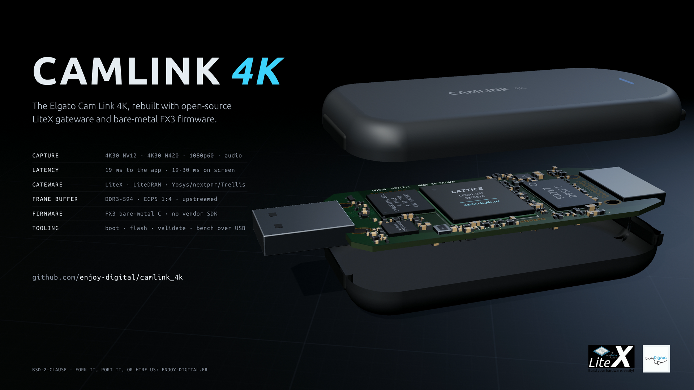
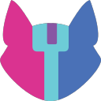
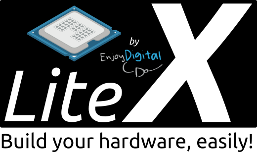

● LIVE · real UVC capture · CamLink 4K3840x2160 · NV12 · 30 fps
Inside CamLink 4K
the capture pipeline is new · the infrastructure around it is LiteX · 145 CSRs · 16 gateware modules
Lines, not frames.
one 1080p60 frame, slowed down ~80x · times from the source render, measured (doc/LATENCY.md)
T +00.0 ms
first data on USB: 3.5 ms vs 35 ms · frame to the app: 19 ms vs 46 ms
Low latency, measured.
1080p60 · time from the source render · same bench, one clock · doc/LATENCY.md
2.4x sooner to the appthan the stock firmware · 10x sooner on USB
FRAME DELIVERED TO THE APPLICATION
MS2109 USB 2.0 stickMJPEG 1080p30
64 ms
Elgato stock firmwareframe buffered
46 ms
CamLink 4Klines streamed
19 ms
ON SCREEN
Elgato stock + ffplay
88 ms
CamLink 4K + camlink_viewdesktop window
37 ms
CamLink 4K + camlink_viewdirect display (Vulkan)
19-30 ms
Open source, all the way down.
from the bitstream compiler to the host viewer: no vendor tool, no vendor IP, no vendor firmware
SILICON
Lattice ECP5 LFE5U-25F bitstream format documented by Project Trellis
✓ OPEN
TOOLCHAIN
Yosys · nextpnr-ecp5 · Project Trellis synthesis · place and route · bitstream

✓ OPEN
FRAMEWORK
LiteX · Migen · LiteX-Boards SoC builder · Python HDL · board support

✓ OPEN
CORES
LiteDRAM · LiteX streams/CSRs · CamLink 4K cores DDR3 1:4 · HDMIIn · NV12 FB · UVC/UAC · GPIF
✓ OPEN
FIRMWARE
FX3 bare-metal C · GCC no vendor SDK · standalone boot from flash
✓ OPEN
HOST
Python tools · camlink_view boot · flash · validate · bench · libusb · SDL2 · Vulkan direct display
✓ OPEN
0 vendor tools · 0 vendor IP · 0 vendor firmware
Thanks.
built on the work of the open-source and reverse-engineering community
LiteX · Enjoy-DigitalSoC builder · LiteDRAM · 300+ contributors since 2011
Migen · M-Labsthe Python HDL under LiteX
YosysHQYosys · nextpnr · Project Trellis
gc
gatecatProject Trellis · nextpnr-ecp5 · ECP5 DDR3 PHY
apertus°Cam Link 4K board netlist
GD
Greg Davillboard netlist and photos
kt
ktemkincamlink-re · the first reverse engineering
RE
Mike Walters · Chaz Schlarpstock firmware reverse engineering
FX3
fx3lafw · Marcus Comstedtbare-metal FX3 reference
3D
three.jsthis film, rendered in a browser
Anthropic · Claudecode by a Claude agent, directed by Enjoy-Digital
CL
Elgatothe Cam Link 4K hardware
VENDOR CODE: 0 BYTESstock bitstream + FX3 firmware → camlink_4k.py + bare-metal C
CAMLINK 4K
The Elgato Cam Link 4K, rebuilt with open-source
LiteX gateware and bare-metal FX3 firmware.
CAPTURE4K30 NV12 · M420 · 1080p60 · audio
LATENCY19 ms to the app · 19-30 ms on screen
OPEN SOURCELiteX · LiteDRAM · Yosys/nextpnr/Trellis
UPSTREAMECP5 DDR3 1:4 → LiteDRAM · LiteX-Boards
FIRMWAREFX3 bare-metal C · no vendor SDK
github.com/enjoy-digital/camlink_4k
built with LiteX · github.com/enjoy-digital/litex
BSD-2-CLAUSE · FORK IT, PORT IT, OR HIRE US: ENJOY-DIGITAL.FR
▶ CLICK TO PLAY WITH SOUND